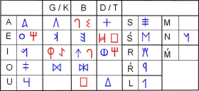

Consecuencias de las colonizaciones
A partir del siglo VI a.C. la suma de la influencia griega y fenicia provocó grandes cambios en una serie de pueblos que habitaban toda la franja mediterránea entre la Andalucía oriental y el sur de Francia. La mayoría de estos pueblos hablaban una lengua parecida, que no tiene relación con el latín ni el griego ni ninguna otra lengua conocida y que aún no se entiende del todo. Se conoce a estos pueblos como los iberos.
Como ya había pasado antes en el suroeste peninsular, las aristocracias de estos pueblos comenzaron a hacerse más poderosas gracias a los intercambios con griegos y fenicios. Sus sociedades se hicieron más complejas y poco a poco comenzaron a evolucionar hacia ciudades-estado. Adaptaron las escrituras griega y fenicia a su propia lengua y desarrollaron así la escritura ibérica.
|  |
| ¿Cómo se escribía en el este de Andalucía hace 2400 años? Pues más o menos así. Imagen de Tautintanes en Wikimedia Commons. Licencia CC BY-SA. |
Igual que en el período anterior la zona minera más rica había estado en el suroeste, ahora cogieron mayor auge las ricas minas de plata de la Andalucía oriental y Murcia. Allí se desarrollaron ricas comunidades iberas como Cástulo (Linares, Jaén), que dominaba el tráfico de metal entre las minas cercanas (Linares, La Carolina...), el Mediterráneo y el valle del Guadalquivir.
Mientras tanto, en el oeste de Andalucía un período de crisis en las rutas comerciales fenicias había hecho que la aristocracia de Tartesos entrara en decadencia, y con ella la vieja cultura tartésica. A medida que el comercio fenicio se recuperó, surgió una nueva cultura urbana, menos aristocrática, organizada en potentes ciudades-estado, como Carmo (Carmona, Sevilla). Son los turdetanos. Un escritor de época romana, Estrabón, los describió como un pueblo que sabía leer y escribir y que conservaba por escrito crónicas antiguas y poemas y leyes en verso, a los que atribuían una antigüedad "de 6.000 años".
Importante
A partir del siglo VI a.C. la influencia de fenicios y griegos sobre las sociedades indígenas hizo que se desarrollara la cultura ibérica entre la Andalucía oriental y la costa del sur de Francia. En la Andalucía occidental se desarrolló la cultura turdetana.
Comprueba lo aprendido
Lee y completa las siguientes frases.
Obra publicada con Licencia Creative Commons Reconocimiento No comercial Compartir igual 4.0